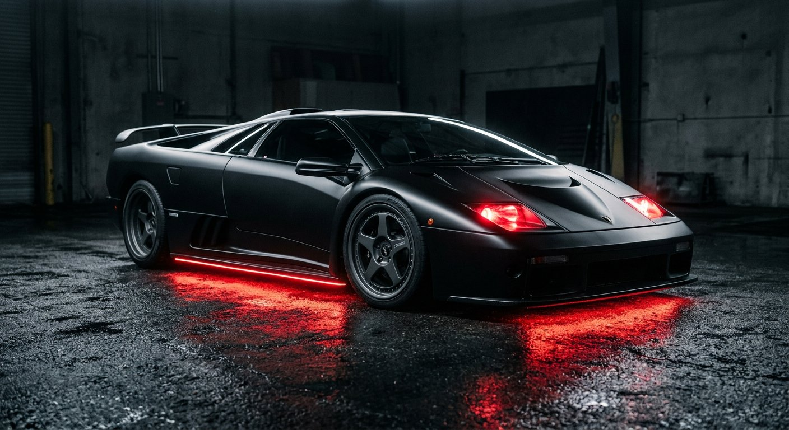
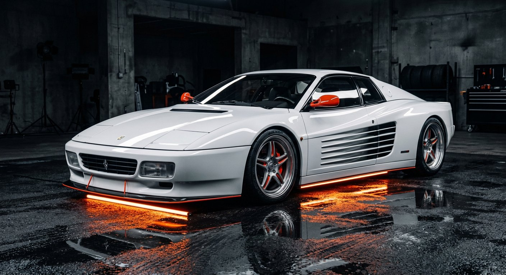
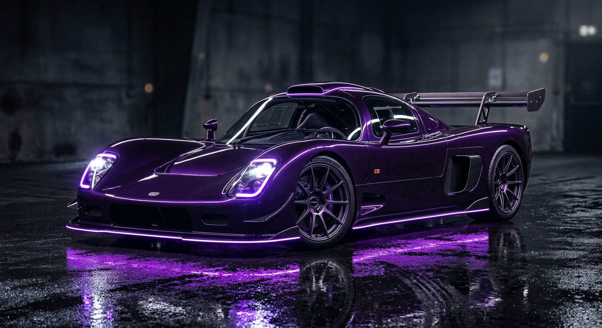
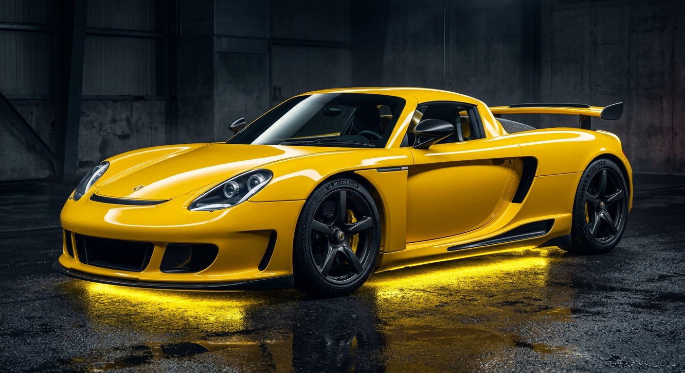

Tensei Slime × Automobile — the four archdemons of Tempest
DEMON SUPER CARS
Every demon who serves Rimuru Tempest carries the name of a supercar. We summoned all four onto one showroom floor.
DIABLO
Lamborghini Diablo · 1991
The Black Progenitor. Diablo answered Rimuru's call and became his right hand — the demon who bends souls to his will. In machine form, the car that wore the name like a war cry: a 5.7-litre V12, scissor doors, and no apologies. Noir rides at the head of the Four.
- 0HPSV · V12 5.7L
- 0KM/HTop speed
- 0SEC0–100 km/h
- 1991A.D.Model year
TESTAROSSA
Ferrari Testarossa · 1988
The White Progenitor — Rimuru's blade, an assassin with white hair and a quiet smile. Her name is Italian for "red head", and the car that gave it: the flat-12 icon of the eighties with the side strakes that defined a whole decade of supercars.
- 0HPFlat-12 4.9L
- 0KM/HTop speed
- 0SEC0–100 km/h
- 1988A.D.Model year
ULTIMA
Ultima GTR · 2006
The Purple Progenitor — Chief Prosecutor of Tempest, the one who makes criminals regret every sentence. Named after the British-built rocket that once lapped a Ferrari Enzo on the Top Gear track: 720 horsepower, 2.3 seconds to 60, zero subtlety.
- 0HPLS7 7.0L V8
- 0KM/HTop speed · 250 mph
- 0SEC0–60 mph
- 2006A.D.Model year
CARRERA
Porsche Carrera GT · 2003
The Yellow Progenitor — Chief Justice of Tempest's Supreme Court. Her verdict on the car that shares her name: guilty of perfection. The last naturally aspirated V10 from the House of Stuttgart, a 250 km/h scalpel dressed in yellow.
- 0HPV10 5.7L · 8200 rpm
- 0KM/HTop speed
- 0SEC0–100 km/h
- 2003A.D.Model year
THE FORGE · IMAGE → GLB
TURN A PIC INTO A MACHINE
The showroom loads /models/<name>.glb for each demon
and falls back to a placeholder if it's missing. Drop your own 3D models in
three steps — every tool below has a free tier.
- 1Pick an image. Clean, front-three-quarter shot of the car on a simple background — the four renders in
/imagesare ready to use. - 2Generate the mesh. Upload it to a free AI image-to-3D tool and wait ~1–2 minutes.
- 3Download
.glband save it asmodels/diablo.glb,models/testarossa.glb,models/ultima.glbormodels/carrera.glb. Keep it under ~5 MB — decimate in Blender if needed.
FEED THESE INTO THE CONVERTER



